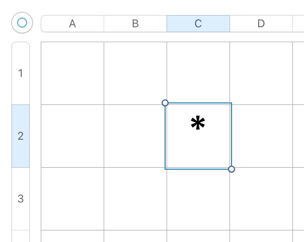
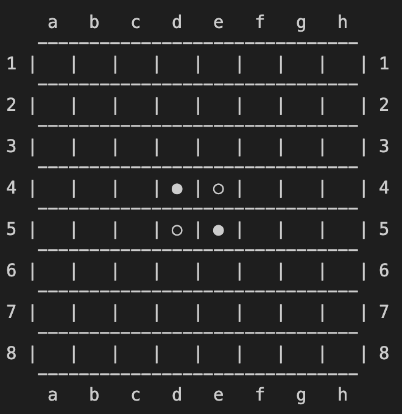

Stage 1 プログラムの機能を考える
1-1 盤面の機能を考える
リバーシは 8 * 8 マスの盤上で石を置いては裏返すいたちごっこを繰り返す不毛な争いです。

ゲーム作る前から不毛とか言っちゃったよこの人
戦いの舞台が平面板である以上、盤面をどう表せばいいか、察しの良い方はもうお気づきでしょうね。

悪かったな、察し悪くて
「2 次元配列で盤面を表す」と言われればもうお分かりですよね？

マス目を縦横の位置で特定し、それぞれ配列のインデックスにすることで盤上の情報を一元管理できるような仕組みを作る。これ、プログラミング界隈ではちょっとした常識なので、いつでも使えるようになっておいてください。例えばこの場合は縦 C 横 2 と表せますね。
Excel や Numbers などの表計算ソフトでやってることとなんら変わりはありません。
~~~~~~~~~~~~~~~
今回のコーディングでは
board[row][column]
の形を採用します。board は盤上の様子を表す 2 重リスト、row は横長の行、column は縦長の列です。row は下に行くほど増え、column は右に行くほど増えるようにします。
ここで注意していただきたいのが、この row や column は 0 スタートです。
は？普通に 1 から数えたらわかりやすいだろ
冷静になって考えれば board のインデックスになっていますから当然なのですが、この後も散々出てきてはコードにバグの卵を産み落とす厄介な危険因子となっておりますので、充分注意してください。
悪かったな、冷静じゃなくて
~~~~~~~~~~~~~~~
また、クラスで盤面の情報を一括管理してしまおうと考えています。後になって

やべえ、もう一つ盤面作らないとグチャグチャになる
なんてグチャグチャな状況になたないようにするためにも、この手法はとっておきたいところですね。
(ちなみにここだけの話、このコードでインスタンスは一つだけです。なのでクラスにする必要は実際ありません)。
じゃあクラス作る意味ねーじゃん
なんでクラスなんか作るんだよ
まあ「お決まりのパターン」みたいなところはありますから。作っておけば機能を拡張しても比較的楽に対処できますよ。
~~~~~~~~~~~~~~~
我々は残念ながら「石をおきたいマスをクリックして」なんて高度な処理に対応する技術はありませんから、コマンドプロンプト・ターミナルと呼ばれる画面でやる必要があります。みなさんが「ハッカーのパソコン画面」と聞いて真っ先に思い浮かべるあれです。
は？何言ってんだよ
あんなん無理に決まってんだろ
私も最初はそう思ってましたから、問題ないでしょう。不安なら勉強するに越したことはないですね。そんなたいそうな知識は不要ですよ。
第一、Python だと大体はテキストエディタ (コーディングするアプリケーション) の上で実行できますから、不要っちゃ不要です。
で、何の話かと言いますと、マウスが使えないんで「盤面のこの位置」という具合にマス目を特定する手段が他に必要になります。そこで下図のような盤面を想定しています。
横長の行は数字で、縦長の列はアルファベットで番号をふって、"a3", "f6" みたいにマス目を指定する。わかりやすいでしょう。ということで、盤面の位置を特定するのはこれでいきます。